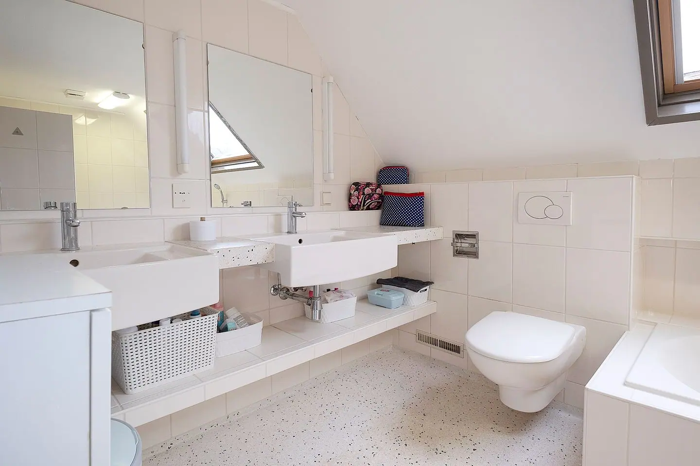

Badkamer, elektra, zonnepanelen en meer,
van A tot Z geregeld.
Oosterveld verbouwt je badkamer en toilet en doet alle installatiewerk eromheen: leidingwerk en loodgieterwerk, meterkast, groepenkast en volledig kabelwerk, laadpaal, zonnepanelen op allerlei daken en een thuisbatterij. Eén vakman, netjes uit één hand.
Waar kunnen we je mee helpen?
Eén vakman voor je hele klus. Kies het onderdeel waar je hulp bij zoekt.
Badkamer verbouwen
Complete badkamerverbouwing, van sloop tot oplevering.
Lees meer →Toilet renovatie
Hangtoilet, fonteintje en nieuw tegelwerk.
Lees meer →Elektra en kabelwerk
Meterkast, volledig kabelwerk, laadpaal en storingen.
Lees meer →Zonnepanelen
Voor plat en schuin dak, woning en bedrijf.
Lees meer →Loodgieterwerk
Leidingwerk verleggen, keuken en sanitair aansluiten.
Lees meer →Thuisbatterij
Opslag van je zonnestroom, netjes aangesloten.
Lees meer →Voor en na: zo verandert een badkamer
Sleep over de foto om te zien hoe de badkamer er vóór en ná de verbouwing uitzag.

 VoorNa
VoorNa
Badkamer J: van kale douchehoek naar afgewerkte inloopdouche


VoorNaBadkamer onder een schuin dak: voor en na de verbouwing
Wat klanten over ons zeggen
Echte ervaringen van klanten, rechtstreeks van Google en Werkspot.
“Voor een nieuwe meterkast hebben we Jasper gevraagd. Hij reageerde direct en heeft de klus perfect geklaard. We vroegen ook om wat extra stopcontacten te plaatsen en ook dat was prima.”
“Zeer snelle prijsopgave voor een renovatie van de badkamer. Ondanks dat wij de samenwerking niet aangaan, communiceert hij erg positief en professioneel.”
“De meterkast hing er snel in, Jasper doet zijn werk uitermate nauwkeurig. Hij legt uit wat er is en wat hij gaat doen en lost het probleem snel op!”
“Een betrouwbare, deskundige en klantgerichte vakman, dat is Jasper! Na veel wisselende ervaringen, eindelijk een vakman gevonden die doet wat hij zegt en zegt wat hij doet.”
“Uitstekend uitgevoerd, netjes achtergelaten, vriendelijk contact.”
“Oosterveld Installaties levert uitstekend vakmanschap. Jasper is deskundig en werkt zeer secuur, met oog voor detail. Alles wordt netjes en professioneel afgewerkt en hij denkt goed mee over de beste oplossingen.”
Ons werk
Van badkamer tot zonnepanelen: een greep uit onze projecten. Klik op een foto voor meer over dat onderdeel.


Zo werken we op de bouw
Korte beelden van ons tegelwerk: grote tegelplaten, nauwkeurig uitgelijnd.
Zo werken we
Duidelijk van eerste contact tot oplevering.
Online richtprijs
Je vult je wensen in en krijgt snel een richtprijs.
Opname bij je thuis
Jasper komt langs, meet op en bespreekt de details.
Vaste prijs
Je ontvangt een definitieve offerte om te tekenen.
Uitvoering
We werken volgens een vaste planning en houden je op de hoogte.
Oplevering
We lopen alles samen na en laten alles schoon achter.
Werkgebied: van Drenthe tot en met Overijssel en Groningen
Oosterveld is gevestigd in Emmen en werkt voor particulieren en bedrijven in Drenthe, Overijssel en Groningen, van Emmen en Coevorden tot Hardenberg en Haren. Kort bij huis blijven betekent korte lijnen en snelle afspraken.
DrentheOverijsselGroningenEmmenKlazienaveenEricaBarger-CompascuumEmmer-CompascuumNieuw-AmsterdamSchoonebeekCoevordenDalenSleenSlagharenGramsbergenHardenbergOdoornExlooBorgerGietenZuidlarenHaren
Veelgestelde vragen
Hoe lang duurt een badkamer renovatie?
De doorlooptijd hangt af van de grootte van de badkamer, de omvang van het werk en de levertijd van tegels en sanitair. Na je aanvraag en de opname geven we een concrete planning.
In welke plaatsen werkt Oosterveld?
Wij zijn gevestigd in Emmen en werken in Drenthe, Overijssel en Groningen, van Emmen tot en met Hardenberg en Haren. Twijfel je of jouw woonplaats erbij hoort? Stuur ons gerust een bericht.
Kan ik badkamer, elektra en zonnepanelen via één bedrijf laten doen?
Ja. Wij doen leidingwerk, elektra, tegelwerk en sanitair voor badkamer en toilet, en plaatsen ook zonnepanelen en thuisbatterijen. Zo heb je één aanspreekpunt.
Hoe vraag ik een richtprijs of offerte aan?
Via het formulier op deze site, per WhatsApp of telefonisch. Je krijgt eerst een richtprijs. Daarna komen we bij je langs voor de opname en ontvang je een definitieve prijs.
Wanneer moet mijn groepenkast worden uitgebreid of vervangen?
Vaak bij een verbouwing of wanneer er nieuwe apparaten bijkomen, zoals een inductiekookplaat, laadpaal of zonnepanelen. Ook als er onvoldoende groepen zijn voor wat er nu op aangesloten zit. We beoordelen jouw situatie ter plaatse.
Plaatsen jullie zonnepanelen op een plat dak en op een schuin dak?
Ja, wij plaatsen zonnepanelen op plat en schuin dak, voor woningen en bedrijfspanden, inclusief aansluiting op de meterkast.
Klaar voor je richtprijs?
Vul je wensen in en ontvang snel een richtprijs. Daarna komen we langs voor een vaste prijs.